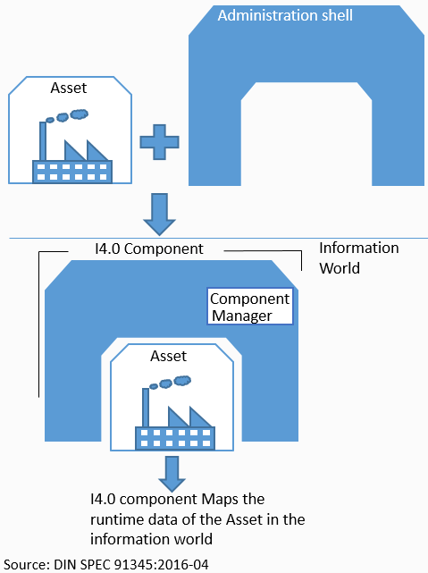
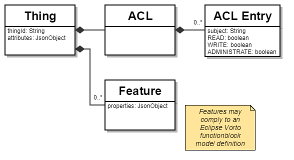
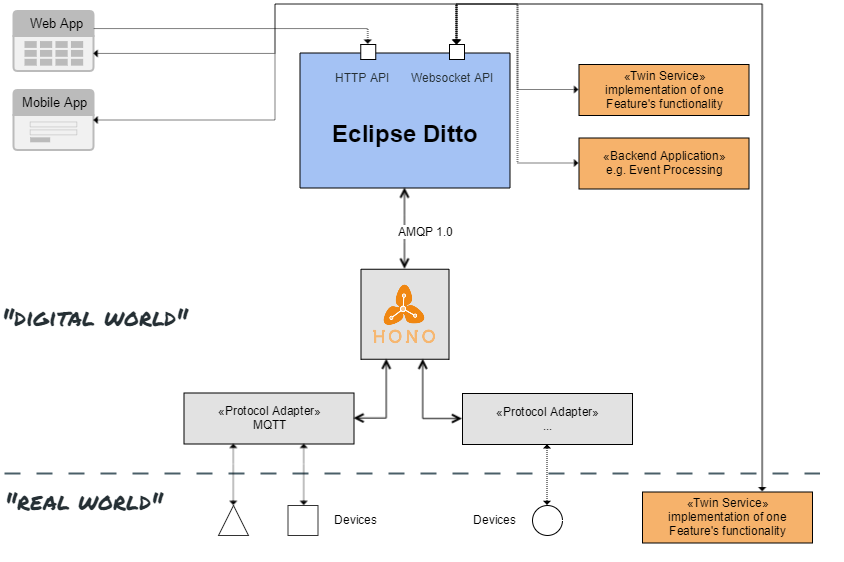

Digital Twins go open source
Eclipse Ditto introduction
Created by Thomas Jäckle (@thjaeckle)
agenda
Motivation
turn physical devices into services
a big part of IoT development happens in the back-end
- APIs optimized for the web
- to control who has access to which aspects
- to be able to directly communicate to devices and access last known state, set desired state
- to be notified about changes/events
- to be able to enhance their APIs with further functionality
sounds complicated?
let's find out if the Digital Twin pattern can help

Digital Twins
a mechanism for simplifying IoT solution development
Digital Twin metaphor
- mirrors physical devices
- provider of aspects+services around devices
- keep real and digital worlds in sync
- industrial and consumer-centric IoT scenarios
in IIoT / Industry 4.0
- asset administration shell ("Verwaltungsschale")
- holistic view of all capabilities (services) and aspects of an asset

Eclipse Ditto
… where IoT devices and their digital twins get together
domain model

features at a glance
- resource-based HTTP JSON API representing devices
- definition of a simple "Ditto Protocol" using JSON for command- and events-based interaction with devices
- Websocket API based on this protocol in addition to the resource-based HTTP API
features at a glance
- optionally configure and enforce a schema for devices (via Eclipse Vorto)*
- accessing and modifying different state perspectives (live, twin)
- notification about changes of device resources via HTTP Server-sent events (SSE) and Websocket
* concept + generator done, implementation not yet started
features at a glance
- authorization/access control at APIs enforcing that only allowed individuals may read/write
- search HTTP API accepting predicate-based query language
- out-of-box integration with Eclipse Hono for communication with devices
- TODO: message routing between connected WebSockets
context

A framework for Digital Twins
what do we mean by "framework"?
TODO
Demo time!
Demo overview
TODO image about what we'll show
Wrap up
Questions?
visit us at our Bosch Software Innovations booth @eclipsecon or engage via:
https://projects.eclipse.org/projects/iot.ditto https://github.com/eclipse/dittoRoadmap 2018
- release (non-milestone)
- optional integration of Eclipse Vorto for validation
- attracting developers in using Ditto
- integration with other OSS projects